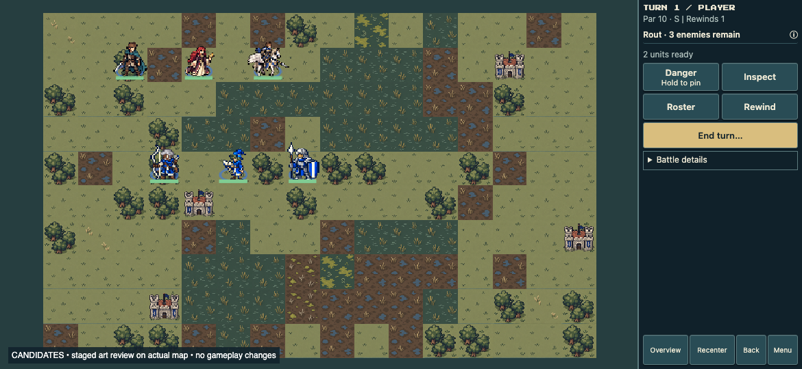
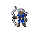
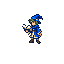
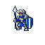

Three original samples designed as coarse map sprites. The test is whether broad color masses, minimal shading and distinct equipment survive reduction better than detailed illustrations.
Top: unchanged Edric, Sera and Pegasus anchors. Lower row, left to right: Archer, Mage, Knight. These are staged art probes in the actual game renderer; no gameplay assets were replaced.

Compare weapon recognition, body proportions and separation from terrain. Captures use the same positions and current class sizing. Grayscale tests value separation; black silhouettes test pose and equipment shape.

Open ivory bow curve, blue torso, exposed sleeves. Bow separates from the body.
Generated source
Triangular blue robe, bent cap, large ivory book. No staff or long cape.
Generated source
Broad square shield, bright armor planes and upright lance.
Generated sourceGenerated with built-in imagegen. Coarse-pixel prompting is an experiment, not a guarantee of a mathematically uniform native pixel grid. Existing runtime nearest-neighbor sizing is retained. No claim of acted-state verification.
{kind=link}
{kind=link}
{kind=link}